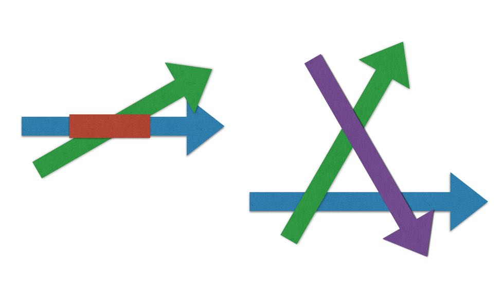

你好，欢迎来到我的《信息论40讲》。
关于大数据，大家已经不陌生了，因为今天我们都不知不觉地使用了大数据，并且也在向那些为我们提供服务的公司提供大数据。当然，有人会说，使用大数据是IT公司或者互联网公司的事情，我自己不搞IT怎么会使用大数据呢？
其实你如果使用美图秀秀修图，或者使用华为手机照相，你在无形中已经用到了大数据。美图秀秀P图，不是根据规则来的，而是将你的脸往所谓“标准的脸”上靠，而“标准的脸”，上面各个尺寸基本上是我们每个人脸的平均值，是大数据统计的结果。
美图秀秀上市之后，在美国就被一些人告到法庭上了。不是因为产品做得不好，也不是因为财务数据有问题，而是因为一些美国人觉得，不论自己是白人还是黑人，都被P成了黄人。这也说明它背后用了大量中国人的数据进行训练。类似的，华为的手机有很多图像识别功能，而它们也是建立在大数据基础之上的。
那么，什么是大数据，它有什么特征？今天在媒体上经常看到一些公司讲自己是大数据公司，它们是真像美图秀秀或者华为那样拥有和使用了大数据，还是在炒作概念？我们怎样才能练就一双火眼金睛？这就是我们今天要谈的内容。
我们先从大数据的特征说起，这样可以帮助你判断真假大数据。
首先，大数据要求数据量大，这一点大家没有疑问。数据量小一定不符合大数据的原则。至于数据量多大合适，我们在前面介绍了置信度的概念，数据至少要大到让统计的结果具有非常高的置信度。
其次，大数据需要具有多维度的特征，而且各个维度最好是正交的。为什么多维度很重要呢？我们不妨看看仅仅是数据量大但是维度不足有什么问题。
我们一个人的基因全图谱数据，大约在1TB这个数量级，也就是1000个GB，这个数据量不可谓不大，但是它没有太大的统计意义，因为我们无法从一个人的数据看出是否有潜在的疾病。那么多几个人的数据是否就可以了呢？也未必。
比如我们有100个人的基因数据，我们发现某个人的一段基因和其他人不同，这是否说明他有疾病呢？我们得不出这样的结论，因为不同人的基因总是或多或少有些不同，否则也无法通过基因确认人的身份了。
但是，如果我们有另一个维度的信息，比如这100人过去的病例，那么就有可能发现某段基因和某些疾病之间的联系。这就是大数据多维度的作用。当然100人的数量还太少，得到的统计结果未必可信。
2016年，Google同斯坦福大学和杜克大学开展了一项长期的合作，就是监测并取得5000人全部的医疗数据。由于有了各个维度的数据，就有可能发现一些生活习惯或者基因和其它生理特征与疾病之间的联系。
今天，淘宝或者其他网店，能够有效地给你推荐产品，在很大程度上就是因为它不仅具有了你在网上购物的数据，而且还从其他渠道，包括在你不知不觉中，获得了生活上的信息。
比如，它可以根据你上网的行为，了解你的年龄、性别和教育背景，根据你晚上和白天的地点，了解你的工作地点和住址，甚至你的工作性质和生活习惯，比如是否经常出差，在什么样的饭店吃过饭，是否爱运动，是否使用名牌产品等等。
由于阿里巴巴数据收集的时间跨度比较长，它还可以看出人们消费习惯的变化。根据这些信息，它就知道你是谁，需要什么。在没有大数据之前，这种事情很难做到。
大数据第三个重要特征，是数据的完备性，它在过去常常被人忽略，因为人类过去使用数据，都是采用抽样的办法来获取，根本不可能做到完备。抽样统计有一个问题，就是总有5%左右的小概率事件覆盖不到，如果最后运气不好，正好落在那5%，统计的方法就失去作用了。
今天情况就不同了，因为收集数据的设备无所不在，我们也在有意无意向它输送数据，因此获得完备的信息完全可能，这样一来就堵住了采用数据作预测的死角。
我们在前面讲到提高名片识别率的方法，就是从网上抓取全部的企业和私人联系地址，拿它们和从名片识别出的信息进行比对，就可以过滤掉几乎所有的错误。这里面其实就是用到了数据的完备性——也就是说，全部的地址、电话等数据我都收集完备了。完备性使得大数据可以算无遗策。
除了上述三个特征，很多时候大数据还需要具有实时性，因为在那些应用场景，一定时间过了，数据就失去意义了。
几个月前我在密云参加大学同学毕业周年聚会，会后我要赶回清华给同学们做讲座。讲座的时间是晚上7点，通常这段路（大约120公里）通勤的时间是两到两个半小时。我那天2点钟出发，原本怎么也能5点到清华，然后吃顿饭，再去会场。
谁知道刚离开密云不多久，进入到京承高速公路，道路就因为交通管制被堵上了，而这个信息手机地图上并没有及时给出，因为只是几分钟前发生的事情。于是我们绕道走京沈高速，当我们好不容易拐到那里，那条道也被封了，而且绕出来还很困难，因为大家都堵在那里。
最后我们绕道进入密云县城，过了不知道多少个红绿灯，又进入怀柔县城，沿着城区里的道路慢慢走。通常是看到地图上有一条通畅的道路，拐上去的时候就遇到拥堵。好在开车的司机对北京的道路足够熟悉，总算赶在7点前将我送到了。
如果我们能够随时获取道路信息，比如高速公路被封堵的信息直接通过车联网送达我们的汽车，那么也不至于那么狼狈。从这个例子，你可以看出万物互联的必要性。但是单纯从大数据出发，很多时候如果不能保证信息的实时性，作出的决定常常是马后炮。
我们今天介绍了大数据的4个明显的特征，即数据量大、多维度、完备性和在一些场景下的实时性。我们特别强调了光是数据量大还不能构成大数据，因为它可能无法得出有效的统计规律，而多维度的特征则让我们可以交叉验证信息，提高准确性。
大数据的威力大家都看到了，那么可能有人要问，有了大数据，我原来从事的行业是否会消失？其实大部分行业不会很快消失，但是可能会以另一种形式出现。而具有行业知识的人要做的，就是用所谓的领域知识建立起不同维度之间信息的桥梁。
当大数据维度非常多之后，就会出现矛盾。下面这张图。左边的图有两个维度的信息，它们一同的作用是，圈定了一个目标范围。右边的图有三个维度的信息，但它们并没有共同的交点，这下麻烦就来了，我们到底该信谁呢？

消除数据之间的矛盾，也需要领域知识。因此在一个行业里从业很长时间，具有专业知识的人，不仅不会被大数据取代，而且有可能利用好大数据，在事业上更上一层楼。在未来的时代，有三类企业会受益于大数据。
第一类企业是类似于腾讯、阿里巴巴或者今日头条的公司，它们自己有数据，有技术，有应用场景，不需外人帮忙。
第二类企业有数据没有技术，包括很多大企业，比如移动通讯运营商、传统的银行和零售业等等，它们需要外人帮忙，但是通常出于保护自己利益的考虑，不会和第一类公司合作。这里面的专业人士，就能够解决上面数据冲突，以及将行业内不同维度的数据联系起来的问题。
第三类企业缺乏数据，但是有技术，于是它们需要为第二类企业解决实际问题。当然，在解决问题的过程中，它们或许能够进入很多领域，逐渐成为新的平台性公司，比如美国著名的大数据公司Splunk就是这么一步步发展起来的，它今天的市值高达200亿美元。但是在一开始，这类公司一定是做脏活累活。
思考题：就大数据多维度的特征谈谈它对你的影响。欢迎你在留言区和我互动。
预告：当然，无论是对于哪一类人，最关键的是要掌握大数据思维，这一点我们下节课接着说。